Cairn
On this page
Recommendation: Strong developer-product candidate; validate outcomes beyond compression.
On a small screen, swipe horizontally to read every column.
| Snapshot | Assessment |
|---|---|
| Supplied location ID | cairn |
| Product family | Agent memory |
| Implementation stage | Alpha with live UI |
| Review date | 2026-09-26 |
| Local state | clean |
Vision and the problem it addresses
Give coding agents institutional memory: what the code is, what was intended, what changed, what the team learned and what past agents did. One CLI, MCP server and browser UI connect the five layers.
Who needs it: Solo developers restarting agent sessions; newcomers learning a repo; tech leads preserving decisions; admins serving team projects.
The moment it becomes useful: Claude repeatedly rediscovers the same code, forgets a reverted approach, or cannot explain why a constraint exists. A folder of notes has no link to the changed symbol or task.
How it works

This diagram summarizes the inspected design. It is not evidence of a successful end-to-end deployment. For a hands-on journey, use the onboarding guide.
How well it addresses the problem
- Live local UI was inspected: Overview, Map and its navigation display populated graph, spec, session and memory counts.
- source_cost explicitly estimates source tokens from file bytes; query logging distinguishes delivery surface and briefing cost.
- The architecture includes deterministic context without a model, optional model enrichment, session hooks, MCP and team modes.
- Selected core/surface/agent-memory tests completed after two sandbox-only port failures were rerun successfully.
These are implementation strengths. Repeated use, customer demand and measured business outcomes remain separate questions.
What is missing or unproven
- Compression is a proxy baseline, not measured avoided reading or invoice savings. Repeated packs can count the same files multiple times.
- The Overview headline switches to MCP totals when present; its file count uses recent rows while token totals cover the grouped history. This can confuse scope.
- Zero drift does not prove semantic correctness or test adequacy. Static edges and inferred co-change relationships have different certainty.
- Hook support differs by agent, and model-backed background processing can consume quota without a foreground question. Team production isolation and retention need deployment validation.
Smallest useful next step
Package a 30-minute tutorial with a disposable repo and before/after task benchmark. Make baseline assumptions, model ledger and net cost visible beside the compression ratio.
Acceptance exercise: Run doctor; open Impact for a known symbol; check citations and a real caller; inspect the session-start preview; add and retire a harmless convention in a fixture; compare a task checked done with its actual file and tests. Measure total task tokens and elapsed time with and without Cairn.
This is a proposed validation exercise unless explicitly recorded as executed in VALIDATION.
Position in the portfolio
Related work: kb code graph, Architecture Foundry, Foundry / AI SDLC, Spreix Brain, Prompture.
Read the overlap and integration decisions before merging features. Shared vocabulary does not guarantee shared IDs, permissions, storage or lifecycle semantics.
On a small screen, swipe horizontally to read every column.
| Reviewer judgment, 1–5 | Score |
|---|---|
| Effort to a credible narrow pilot | 2 |
| Potential breadth and recurrence of the need | 5 |
| Integration, operational and consequence exposure | 3 |
These are ordinal planning judgments, not completion percentages or a commercial valuation. Empty/archive projects should be parked rather than treated as active bets.
Evidence and next reading
Source references and snapshot limits · Developer / Claude onboarding · Portfolio synthesis